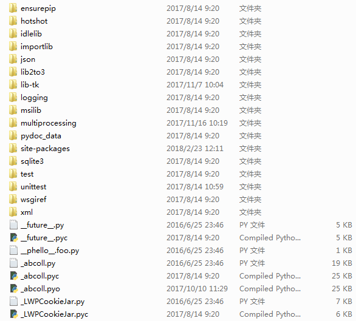
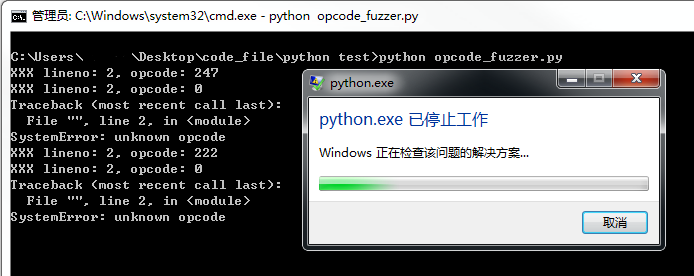
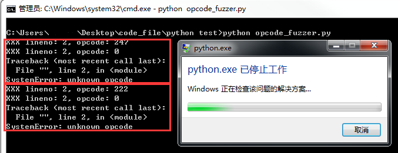
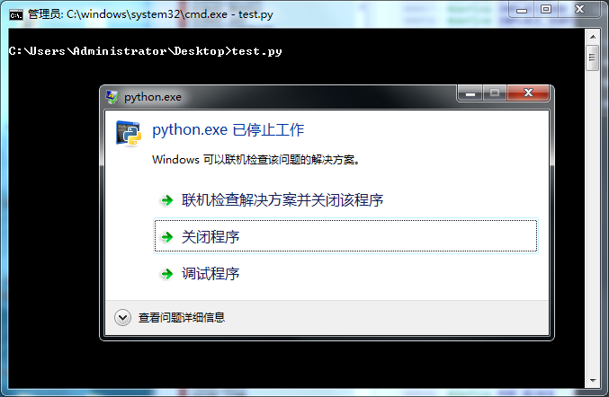
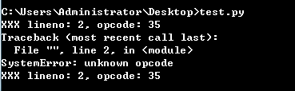
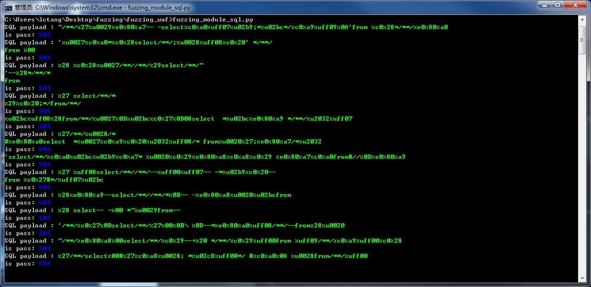
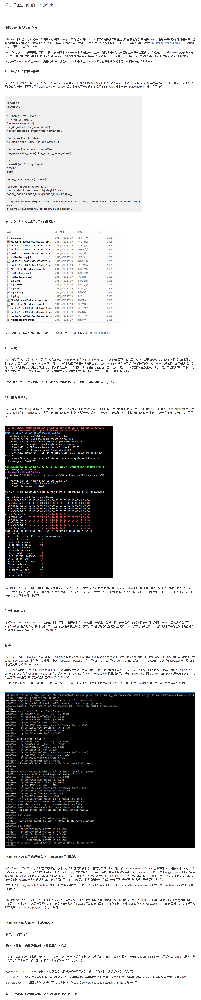
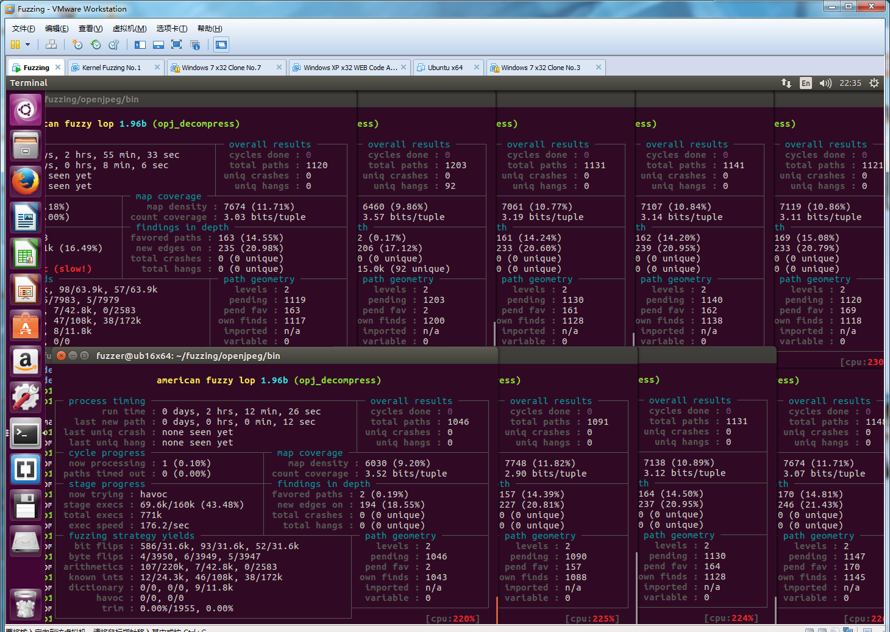
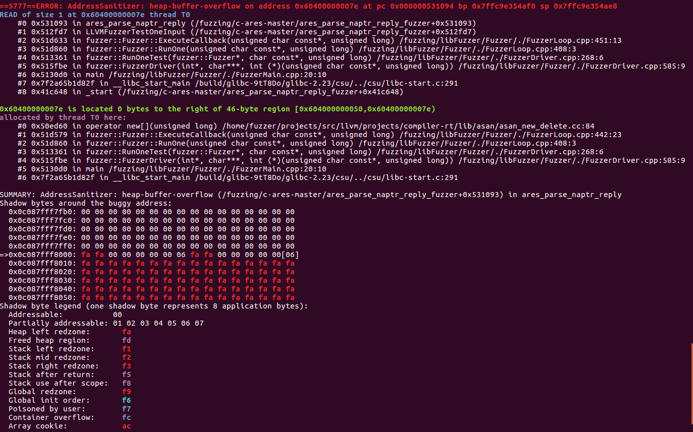

4. Fuzzing 模糊测试之数据输入
- 必备工具
- Fuzzing 与代码覆盖率
- Fuzzing 攻击点
- Fuzzing 的入口点
- Fuzzing 数据生成
- 什么时候选择随机生成数据,什么时候选择按结构生成数据
- 结尾
- AFL 和libFuzzer 的演示
必备工具
Python ,Source Insight
Fuzzing 与代码覆盖率
前面一章说到在Github 上快速阅读代码,这样有助于我们去了解关于我们要挖掘漏洞的目标的一些理解,对于程序有了一些理解之后,接下来就可以尝试写些Fuzzing 来跑跑漏洞了.
Fuzzing 是模糊测试的意思,我们可以按照给定的格式来生成数据或者随机生成,观察程序有没有处理异常或者程序崩溃.读者要注意的一点是:二进制Fuzzing 的思路和WEB Fuzzing 的思路是完全不同的,后面会通过许多的例子来告诉大家二进制和WEB Fuzzing 到底差异在哪里.Fuzzing 和源码挖洞是相互辅助的!不要把能不能挖到漏洞的锅都丢给Fuzzing ,Fuzzing 不出来就是没有漏洞;也不要把全部的精力都花在阅读源码上,有很多时候会迷失在代码里,忘记上下文到底在做些什么,越看越迷茫.这是成本与收益的博弈,对于代码量较大的程序来说,偏向Fuzzing 的投入产出比较高;对于代码量较小的程序来说,偏向阅读源码的投入产出比较高.
代码覆盖率是说,这次自动化测试触发了的代码占整体代码的比率是多少.要想对一个程序的所有代码都要测试到,这样的代码覆盖率就是100% ,这是不可能的,因为会有很多的功能和代码是需要联合起来触发的,有的代码触发条件逻辑非常复杂,这些都是Fuzzing 的短板,Fuzzing 在对某一个攻击点测试上效果是很好的,一个程序会有很多的攻击点,所以要针对各个不同的攻击点都要写不同的Fuzzer ,提高Fuzzing 代码覆盖率.
Fuzzing 攻击点
以Python 为例子,Python 的攻击点有三处:库,内部对象,运行环境
Python 库
关于Python 的库代码,我们可以从Python 安装路径下的Lib 目录中找到

每个库都能够去找个针对性的Fuzzer 跑一跑,不过有些Python 库是做系统操作的,重点挑一些外部数据可以流进来,然后又可以进行处理的,比如:json,urllib,requests 这些库.本地库找到漏洞有时候利用会比较鸡肋,除非你的渗透对象是云服务(比如SAE 这种只提供一个执行容器的云,那么我们就需要找到一个可以绕过Python 解析器能够直接执行二进制代码的方式来绕过沙盒,如果读者不是很理解这个操作,同样的原理请参考pwn2own 从浏览器到系统system/root 提权),否则能够用利用的地方比较少.这个是我在挖requests 的时候挖到的一个洞,可以在Cookie max-age 中设置字符串值触发Cookielib 处理异常,丢弃掉这个Set-cookie 字段,让爬虫无法获取Cookie .传送门:https://github.com/lcatro/Python_CookieLib_0day
上面提到的库都是Python 的代码相互调用,但是有一些库是能触发二进制代码的,比如:http://www.freebuf.com/articles/network/27817.html
Python 内部对象
说到Python 内部对象,对没有了解过解析器是如何做到远程代码执行的同学推荐阅读:https://github.com/lcatro/vuln_javascript
对内部对象做一些的操作,最后可以达到RCE (远程代码执行)的结果.我们先看看PoC 是怎么样的(以JavaScript 为例子,Python 版没有找到,原理都差不多的),Link :https://github.com/tunz/js-vuln-db
PoC 1 :
function opt() {
let obj = '2.3023e-320';
for (let i = 0; i < 1; i++) {
obj.x = 1;
obj = +obj;
obj.x = 1;
}
}
function main() {
for (let i = 0; i < 100; i++) {
opt();
}
}
main();
PoC 2 :
function opt() {
let arr = [];
return arr['x'];
}
function main() {
let arr = [1.1, 2.2, 3.3];
for (let i = 0; i < 0x10000; i++) {
opt();
}
Array.prototype.__defineGetter__('x', Object.prototype.valueOf);
print(opt());
}
main();
PoC 3 :
var f = function()
{
var o = { a: {}, b: { ba: { baa: 0, bab: [] }, bb: {}, bc: { bca: {bcaa: 0, bcab: 0, bcac: this} } } };
o.b.bc.bca.bcab = 0;
o.b.bb.bba = Array.prototype.slice.apply(o.b.ba.bab);
};
while(true) f(f);
细心的你应该能从这些PoC 里面发现了很多Fuzzing 的痕迹,对于这种涉及到解析器运行时产生的问题,是需要构造代码来Fuzzing 的.要展开来讲还需要用很多篇幅,后面还会介绍到一个东西叫AST (抽象语法树),读者们可以结合AST 和js-vuln-db 的PoC 这两个东西一起细细琢磨,很有意思的.
Python 运行环境
Python 运行环境有两部分:编译和执行.Python 的编译请参考compile() 函数,我们关注Python 运行环境的执行部分,对应的源码在Python/Ceval.c PyEval_EvalFrameEx().Python 的OpCode 的格式如下:
| OpCode | 没有操作数的OpCode
| OpCode | OpNum1 | 一个操作数的OpCode
| OpCode | OpNum1 | OpNum2 | 两个操作数的OpCode
关于操作码的具体信息在Include/Opcode.h 里.那么我们生成的Python 字节码要怎么样才能传递到PyEval_EvalFrameEx() 里执行呢?
Fuzzing 的入口点
找到攻击点之后,还需要给Fuzzing 构建一个入口点,让我们的Fuzzing 生成的数据流能够进入到这些地方去.以AFL 为例子(本篇文章没有介绍AFL 的使用,读者们可以从这里了解更多关于AFL 的使用:https://github.com/lcatro/Fuzzing-ImageMagick ;关于libFuzzer 推荐阅读:https://github.com/Dor1s/libfuzzer-workshop (入门教程);https://github.com/google/fuzzer-test-suite (真实的测试用例)),我们给AFL Fuzzing 的入口点就是命令行,通过使用不同的命令参数组合来触发更多的代码覆盖率,举个例子
afl-fuzz -i samples -o output ./magick convert @@ /dev/null
afl-fuzz -i samples -o output ./magick composite @@ /dev/null
afl-fuzz -i samples -o output ./magick compare @@ /dev/null
afl-fuzz -i samples -o output ./magick montage @@ /dev/null
AFL 就会把变异的样本传递进去测试,有些库是完全没有像ImageMagick 这种入口的,比如:libGif ,libxml 这些,就得要手工构造入口点,再提供给AFL 来Fuzzing
对于Python 来说,我们还有pyc 文件,pyc 文件里面保存的是Python OpCode ,使用Python 执行pyc 之后,最后会将OpCode 传递到PyEval_EvalFrameEx() 执行,关于pyc 的文件结构读者们可以自行搜素,下面放一段打包字节码成pyc 结构的代码
import marshal
class code_object(object):
def __init__(self) :
self.co_argcount=0
self.co_nlocals=0
self.co_stacksize=1
self.co_flags=0x40
self.co_code=b''
self.co_consts=()
self.co_names=()
self.co_varnames=()
self.co_filename=''
self.co_name='<module>'
self.co_firstlineno=1
self.co_lnotab=b'\x00\x01'
self.co_freevars=()
self.co_cellvars=()
def serialize_code_object(code_object) :
code_buffer=b'\x63'
code_buffer+=marshal.dumps(code_object.co_argcount)[1:]
code_buffer+=marshal.dumps(code_object.co_nlocals)[1:]
code_buffer+=marshal.dumps(code_object.co_stacksize)[1:]
code_buffer+=marshal.dumps(code_object.co_flags)[1:]
code_buffer+=marshal.dumps(code_object.co_code)
code_buffer+=marshal.dumps(code_object.co_consts)
code_buffer+=marshal.dumps(code_object.co_names)
code_buffer+=marshal.dumps(code_object.co_varnames)
code_buffer+=marshal.dumps(code_object.co_freevars)
code_buffer+=marshal.dumps(code_object.co_cellvars)
code_buffer+=marshal.dumps(code_object.co_filename)
code_buffer+=marshal.dumps(code_object.co_name)
code_buffer+=struct.pack('L',code_object.co_firstlineno)
code_buffer+=marshal.dumps(code_object.co_lnotab)
return code_buffer
def save_to_pyc(file_path,code_object) :
file=open(file_path, 'wb')
if file :
file.write(imp.get_magic())
file.write(struct.pack('L',time.time()))
file.write(serialize_code_object(code_object))
file.close()
def make_code_object(opcode_data) :
compile_code_object = python_opcode_build.code_object()
compile_code_object.co_argcount = 0
compile_code_object.co_code = packet_code_object_in_try_block(opcode_data)
compile_code_object.co_consts = tuple(make_random_string_list(3,8),)
compile_code_object.co_names = tuple(make_random_string_list(3,8))
compile_code_object.co_varnames = tuple(make_random_string_list(3,8))
return compile_code_object
Fuzzing 数据生成
找到了一个攻击点并且构造好Fuzzing 入口点之后,这个时候就需要传递一些数据进去测试了,一般有两种方式进行Fuzzing
随机生成数据
随机生成数据是真的随机,我们来看看Fuzzer 的代码
import imp
import marshal
import os
import random
import struct
import time
class code_object_class(object):
def __init__(self) :
self.co_argcount=0
self.co_nlocals=0
self.co_stacksize=1
self.co_flags=0x40
self.co_code=b''
self.co_consts=()
self.co_names=()
self.co_varnames=()
self.co_filename=''
self.co_name='<module>'
self.co_firstlineno=1
self.co_lnotab=b'\x00\x01'
self.co_freevars=()
self.co_cellvars=()
def serialize_code_object(code_object) :
code_buffer=b'\x63'
code_buffer+=marshal.dumps(code_object.co_argcount)[1:]
code_buffer+=marshal.dumps(code_object.co_nlocals)[1:]
code_buffer+=marshal.dumps(code_object.co_stacksize)[1:]
code_buffer+=marshal.dumps(code_object.co_flags)[1:]
code_buffer+=marshal.dumps(code_object.co_code)
code_buffer+=marshal.dumps(code_object.co_consts)
code_buffer+=marshal.dumps(code_object.co_names)
code_buffer+=marshal.dumps(code_object.co_varnames)
code_buffer+=marshal.dumps(code_object.co_freevars)
code_buffer+=marshal.dumps(code_object.co_cellvars)
code_buffer+=marshal.dumps(code_object.co_filename)
code_buffer+=marshal.dumps(code_object.co_name)
code_buffer+=struct.pack('L',code_object.co_firstlineno)
code_buffer+=marshal.dumps(code_object.co_lnotab)
return code_buffer
def save_to_pyc(file_path,code_object) :
file=open(file_path, 'wb')
if file :
file.write(imp.get_magic())
file.write(struct.pack('L',time.time()))
file.write(serialize_code_object(code_object))
file.close()
def make_random_string(length) :
data = ''
for index in range(length) :
data += chr(random.randint(0,255))
return data
def make_random_string_list(list_count,string_length) :
return_list = []
for list_index in range(list_count) :
for string_index in range(list_count) :
return_list.append(make_random_string(string_length))
return return_list
def packet_code_object_in_try_block(code) :
code_length_low = (len(code) % 0x100) & 0xFF
code_length_height = (len(code) >> 8) & 0xFF
try_block = b'\x79'
try_block += chr(code_length_height)
try_block += chr(code_length_low)
try_block += code
try_block += b'\x6e\x07\x00\x01\x01\x01\x6e\x01\x00\x58\x64\x01\x00\x53'
return try_block
def make_code_object(opcode_data) :
compile_code_object = code_object_class()
compile_code_object.co_argcount = 0
compile_code_object.co_code = packet_code_object_in_try_block(opcode_data)
compile_code_object.co_consts = tuple(make_random_string_list(3,8),)
compile_code_object.co_names = tuple(make_random_string_list(3,8))
compile_code_object.co_varnames = tuple(make_random_string_list(3,8))
return compile_code_object
if __name__ == '__main__' :
while True :
code_object = make_code_object(make_random_string(64))
save_to_pyc('python_fuzzing.tmp.pyc',code_object)
os.system('python python_fuzzing.tmp.pyc')
运行效果

按结构生成数据
上面的Fuzzing 已经出现了崩溃的结果,现在我们可以开开心心地拿样本来分析漏洞崩溃原因了,不过这里是在讨论如何Fuzzing ,所以就不多做漏洞分析了,细心的你应该观察到了这一点

这些OpCode 无法被运行环境所识别,所以提示了异常.重复来跑这种没有意义的Fuzzing 其实是很低效的,我们回去阅读PyEval_EvalFrameEx() 找到解决问题的答案.
在Python/Ceval.c:1199 行代码里,这里是OpCode 的解析执行部分,我们看这个switch 的default 部分(Python/Ceval.c:3134)
default:
fprintf(stderr,
"XXX lineno: %d, opcode: %d\n",
PyFrame_GetLineNumber(f),
opcode);
PyErr_SetString(PyExc_SystemError, "unknown opcode");
why = WHY_EXCEPTION;
break;
原来是OpCode 没有被case 语句判断成功,那么再去看看include\Opcode.h 的OpCode 都有哪些取值
#ifndef Py_OPCODE_H
#define Py_OPCODE_H
#ifdef __cplusplus
extern "C" {
#endif
/* Instruction opcodes for compiled code */
#define STOP_CODE 0
#define POP_TOP 1
#define ROT_TWO 2
#define ROT_THREE 3
// .....
#define SETUP_WITH 143
/* Support for opargs more than 16 bits long */
#define EXTENDED_ARG 145
#define SET_ADD 146
#define MAP_ADD 147
enum cmp_op {PyCmp_LT=Py_LT, PyCmp_LE=Py_LE, PyCmp_EQ=Py_EQ, PyCmp_NE=Py_NE, PyCmp_GT=Py_GT, PyCmp_GE=Py_GE,
PyCmp_IN, PyCmp_NOT_IN, PyCmp_IS, PyCmp_IS_NOT, PyCmp_EXC_MATCH, PyCmp_BAD};
#define HAS_ARG(op) ((op) >= HAVE_ARGUMENT)
#ifdef __cplusplus
}
#endif
#endif /* !Py_OPCODE_H */
这些OpCode 都是连续的,从0 到147 这个范围里取值,那么就可以确定OpCode = range(0,104) ,接下来再看第94 行和第166 行代码
#define HAVE_ARGUMENT 90 /* Opcodes from here have an argument: */ // OpCode.h:90
#define STORE_NAME 90 /* Index in name list */
#define DELETE_NAME 91 /* "" */
#define UNPACK_SEQUENCE 92 /* Number of sequence items */
#define FOR_ITER 93
#define LIST_APPEND 94
// ...
#define HAS_ARG(op) ((op) >= HAVE_ARGUMENT) // OpCode.h:166
现在我们知道OpCode 的数值大于90 就是需要带参数的OpCode ,现在就需要找到OpNumber 的格式到底是怎么样的,来看看Ceval.c:1167 行代码
opcode = NEXTOP();
oparg = 0; /* allows oparg to be stored in a register because
it doesn't have to be remembered across a full loop */
if (HAS_ARG(opcode))
oparg = NEXTARG();
#define NEXTOP() (*next_instr++)
#define NEXTARG() (next_instr += 2, (next_instr[-1]<<8) + next_instr[-2])
现在可以知道,OpCode 格式如下:
不带参数: OpCode (1 Byte)
带参数: OpCode (1 Byte) | OpNumber (2 Byte)
根据上面得到的信息,可以写一个按照结构生成数据的模块.
def opcode_no_opnumber() : # 针对无操作数的指令进行数据生成
opcode = random.randint(0,89)
return chr(opcode)
def opcode_has_opnumber() : # 针对有操作数的指令进行数据生成
opcode = random.randint(90,104)
opnumber1 = random.randrange(0xFF)
opnumber2 = random.randrange(0xFF)
return chr(opcode) + chr(opnumber1) + chr(opnumber2)
def make_opcode_stream(opcode_length = 6) :
opcode_stream = ''
for index in range(opcode_length) :
if random.randint(0,1) : # 50% 的选择概率
opcode_stream += opcode_no_opnumber()
else :
opcode_stream += opcode_has_opnumber()
return opcode_stream
写好了这两个模块之后,还需要修改这些代码
def make_code_object(opcode_data) :
compile_code_object = code_object_class()
compile_code_object.co_argcount = 0
compile_code_object.co_code = opcode_data
compile_code_object.co_consts = tuple(make_random_string_list(3,8),)
compile_code_object.co_names = tuple(make_random_string_list(3,8))
compile_code_object.co_varnames = tuple(make_random_string_list(3,8))
return compile_code_object
if __name__ == '__main__' :
while True :
code_object = make_code_object(make_opcode_stream())
save_to_pyc('python_fuzzing.tmp.pyc',code_object)
os.system('python python_fuzzing.tmp.pyc')
然后就可以继续跑Fuzzing 了,效果如下


往下继续运行,我们还是可以看到Python 运行环境抛出了OpCode 识别失败,我们再回去读读Opcode.h 的代码
#define SLICE 30
/* Also uses 31-33 */
#define SLICE_1 31
#define SLICE_2 32
#define SLICE_3 33
#define STORE_SLICE 40
/* Also uses 41-43 */
#define STORE_SLICE_1 41
#define STORE_SLICE_2 42
#define STORE_SLICE_3 43
#define DELETE_SLICE 50
/* Also uses 51-53 */
#define DELETE_SLICE_1 51
#define DELETE_SLICE_2 52
#define DELETE_SLICE_3 53
原来OpCode 的取值并不是连续的,这就解开了困扰我们的问题,读者们可以拿上面的代码去继续完善
什么时候选择随机生成数据,什么时候选择按结构生成数据
如果输入是有限制的,那就按结构生成数据,如果输入是无限制的,那就随机生成数据
输入限制是什么意思呢?不妨来看几个例子
Fuzzing WAF
对WAF Fuzzing .攻击点有:SQL Payload 拦截,XSS Payload 拦截,WebShell 拦截,文件目录拦截,系统命令拦截等部分.现在拿出SQL Payload Fuzzing 来说,SQL Payload 是有限的,比如:' ," ,select ,union ,where 等关键字,还有SQL Bypass Payload ,可以参考SQLMAP 的Bypass 套路:https://github.com/sqlmapproject/sqlmap/tree/master/tamper
对于输入是有限的Fuzzing ,一定要尽可能搜集多的关键字,提高Fuzzing 代码覆盖率
sql_tiny_dict = ['select','from','*','where','order by','desc','asc','insert','top','limit', # SQL 基础语句
'update','delete','set','as','in','create','table','db'
'\'','"','%','_', # 特殊符号
'(',')','=','<','>','<>','<=','=>','between','like','+','-','and','or','not','|', # 运算符
'NULL'
]
sql_function = [ # 函数
'avg','count','first','last','max','min','sum','ucase','lcase','mid','len','round','now','format',
'ascii','char','nchar','lower','upper','str','ltrim','rtrim','left','right','substring','charindex','patindex',
'quotename','replicate','reverse','replace','space','stuff','cast','convert','day','month','year','dateadd',
'datediff','datename','datepart','getdate','suser_name','user_name','user','show_role','db_name','object_name',
'col_name','col_length','valid_name','charindex','rank','column_name'
]
bypass_string = [ # Bypass 关键字
'\'','"',
'/*','*','*/','/**/',' ',b'\0','%00','()','//','\\','--','#','--+','-- -',';','#',
'%27','%u0027','%u02b9','%u02bc','%u02c8','%u2032','%uff07','%c0%27','%c0%a7','%e0%80%a7', # '
'%20','%u0020','%uff00','%c0%20','%c0%a0','%e0%80%a0', # space
'%28','%u0028','%uff08','%c0%28','%c0%a8','%e0%80%a8', # (
'%29','%u0029','%uff09','%c0%29','%c0%a9','%e0%80%a9', # )
'\r','%0D','\n','%0A','%0B','\r\n'
]
def make_payload(using_payload_count,using_bypass_count) :
output_payload = ''
if not random.randint(0,9) : # 10%
output_payload += random.choice(['\'','"','%27','%28'])
if not random.randint(0,1) : # 5%
output_payload += make_space()
if not random.randint(0,3) : # 25%
output_payload += random.choice(bypass_string)
if not random.randint(0,1) : # 12.5%
output_payload += make_space()
for using_payload_count_index in range(using_payload_count) :
if random.randint(0,1) :
sql_tiny_element = random.choice(sql_tiny_dict) #fuzzing_entry.random_encode_string( )
bypass_payload = ''
for using_bypass_count_index in range(using_bypass_count) :
bypass_payload += random.choice(bypass_string)
sql_tiny_element += bypass_payload + make_space()
else :
sql_tiny_element = random.choice(sql_function)
if random.randint(0,1) : # 25%
for using_bypass_count_index in range(using_bypass_count) :
sql_tiny_element += random.choice(bypass_string)
sql_tiny_element += '(' + make_argument() + ')'
output_payload += sql_tiny_element + make_space()
return output_payload
def fuzzing() :
sql_url = 'https://cloud.tencent.com/?test='
while True :
sql_payload = make_payload(random.randint(1,6),random.randint(0,3))
print 'SQL payload :',
fuzzing_output.green_output(sql_payload)
print 'is pass:' ,
responed = requests.get(sql_url + sql_payload)
if 200 == responed.status_code :
fuzzing_output.red_output(str(responed.status_code))# + ' ' + responed.text)
else :
fuzzing_output.bule_output(str(responed.status_code))
time.sleep(0.5)
运行结果如下,利用这个简单的Fuzzer 还找到了个腾讯云SQL Bypass 的洞.

Fuzzing Windows 内核
Windows 内核的攻击点有很多,在这里我们只讨论内核函数syscall 的Fuzzing .参考链接:https://github.com/mwrlabs/KernelFuzzer ,https://github.com/tinysec/windows-syscall-table
syscall 是有固定格式的:内核函数SSDT 索引号,参数1,参数2 等等.我们来看看KernelFuzzer 里面是怎么样做Fuzzing 输入点的,代码在bughunt_syscall.asm 和bughunt_syscall_x64.asm 中
mov ecx, [ebp + 18h] ; main (argv[5]) = dw0x04
push ecx
mov ecx, [ebp + 14h] ; main (argv[4]) = dw0x03
push ecx
mov ecx, [ebp + 10h] ; main (argv[3]) = dw0x02
push ecx
mov ecx, [ebp + 0Ch] ; main (argv[2]) = dw0x01
push ecx ; push argument in stack ..
mov eax, [ebp + 08h] ; main (argv[1]) = syscall_uid
mov edx, 7FFE0300h
call dword ptr [edx] ; call syscall ..
我们再来看看SSDT 内核函数的信息
| name | id32 | id64 | argc32 | argc64 | argcFrom |
|---|---|---|---|---|---|
| NtAcceptConnectPort | 2 | 2 | 6 | 6 | wow64 |
| NtAccessCheck | 0 | 0 | 8 | 8 | wow64 |
| NtAccessCheckAndAuditAlarm | 439 | 41 | 11 | 11 | wow64 |
| NtAccessCheckByType | 438 | 99 | 11 | 11 | wow64 |
| NtAccessCheckByTypeAndAuditAlarm | 437 | 89 | 16 | 16 | wow64 |
| NtAccessCheckByTypeResultList | 436 | 100 | 11 | 11 | wow64 |
| NtAccessCheckByTypeResultListAndAuditAlarm | 435 | 101 | 16 | 16 | wow64 |
| NtAccessCheckByTypeResultListAndAuditAlarmByHandle | 434 | 102 | 17 | 17 | wow64 |
id32 ,id64 指的是32 和64 位平台下的内核函数序号.argc32 和argc64 是指32 和64 位平台下的内核函数参数个数.所以我们可以知道Fuzzing 数据的构造方式了
syscall 2 a,b,c,d,e,f
syscall 0 a,b,c,d,e,f,g,h
syscall 439 a,b,c,d,e,f,g,h,i,j,k
...
再精细一点来设计这个Fuzzing ,就还需要考虑到句柄,内核缓冲区等各种信息,更多细节在此就不多细说了,感兴趣的读者可以阅读:https://github.com/mwrlabs/KernelFuzzer/blob/master/bughunt_thread.h
Fuzzing ImageMagick
如果读者已经读过了我之前写过的那篇Fuzzing Imagemagick 的文章,可能你会对这段代码有疑惑,Link:https://github.com/lcatro/Fuzzing-ImageMagick/blob/master/%E5%A6%82%E4%BD%95%E4%BD%BF%E7%94%A8Fuzzing%E6%8C%96%E6%8E%98ImageMagick%E7%9A%84%E6%BC%8F%E6%B4%9E.md#5-如何使用libfuzzer-fuzzing-imagemagick ,摘录部分代码
static const struct {
char
*name;
unsigned char
*magic;
unsigned int
length,
offset;
} StaticMagic[] = {
#define MAGIC(name,offset,magic) {name,(unsigned char *)magic,sizeof(magic)-1,offset}
MAGIC("WEBP", 8, "WEBP"),
MAGIC("AVI", 0, "RIFF"),
MAGIC("8BIMWTEXT", 0, "8\000B\000I\000M\000#"),
MAGIC("8BIMTEXT", 0, "8BIM#"),
MAGIC("8BIM", 0, "8BIM"),
MAGIC("BMP", 0, "BA"),
MAGIC("BMP", 0, "BM"),
MAGIC("BMP", 0, "CI"),
MAGIC("BMP", 0, "CP"),
MAGIC("BMP", 0, "IC"),
MAGIC("BMP", 0, "PI"),
MAGIC("CALS", 21, "version: MIL-STD-1840"),
MAGIC("CALS", 0, "srcdocid:"),
MAGIC("CALS", 9, "srcdocid:"),
MAGIC("CALS", 8, "rorient:"),
MAGIC("CGM", 0, "BEGMF"),
//...
};
extern "C" int LLVMFuzzerTestOneInput(const unsigned char* data,unsigned int size) {
int random_image_flag_index = random(data,size);
unsigned int random_image_flag_offset = StaticMagic[random_image_flag_index].offset;
unsigned int random_image_flag_length = StaticMagic[random_image_flag_index].length;
unsigned int image_buffer_length = random_image_flag_offset + random_image_flag_length + size;
unsigned char* image_buffer = (unsigned char*)malloc(image_buffer_length);
memset(image_buffer,0,image_buffer_length);
memcpy(image_buffer,StaticMagic[random_image_flag_index].name,StaticMagic[random_image_flag_index].length);
FILE* file = fopen(GENARATE_FILE_NAME,"w");
if (NULL != file) {
fwrite(image_buffer,1,image_buffer_length,file);
fclose(file);
printf("buffer=%s(0x%X), size=%d,input format=%s\n",image_buffer,image_buffer,image_buffer_length,StaticMagic[random_image_flag_index].name);
ExceptionInfo exception;
ImageInfo* read_image_info;
ImageInfo* write_image_info;
Image* image;
GetExceptionInfo(&exception);
read_image_info = CloneImageInfo((ImageInfo*)NULL);
write_image_info = CloneImageInfo((ImageInfo*)NULL);
strlcpy(read_image_info->filename,GENARATE_FILE_NAME,MaxTextExtent);
strlcpy(write_image_info->filename,"/dev/null",MaxTextExtent);
SetImageInfo(read_image_info,SETMAGICK_READ,&exception);
SetImageInfo(write_image_info,SETMAGICK_WRITE,&exception);
image = ReadImage(read_image_info,&exception);
if (NULL != image)
WriteImage(write_image_info,image);
DestroyImageInfo(read_image_info);
DestroyImageInfo(write_image_info);
DestroyExceptionInfo(&exception);
}
free(image_buffer);
return 0;
}
这段代码的意思是,随机从StaticMagic 中选择一个图像头部特征,然后和libFuzzer 生成的数据拼接到一起.格式如下
图像格式特征码 | libFuzzer 生成的数据
为什么要这么做呢?我们需要来阅读一下ImageMagick 的代码.图像格式特征码可以到MagickCore/magic.c:90 行找到声明.
static const MagicMapInfo
MagicMap[] =
{
{ "8BIMWTEXT", 0, MagicPattern("8\000B\000I\000M\000#") },
{ "8BIMTEXT", 0, MagicPattern("8BIM#") },
{ "8BIM", 0, MagicPattern("8BIM") },
{ "BMP", 0, MagicPattern("BA") },
{ "BMP", 0, MagicPattern("BM") },
{ "BMP", 0, MagicPattern("CI") },
//...
{ "XEF", 0, MagicPattern("FOVb") },
{ "XPM", 1, MagicPattern("* XPM *") }
};
ImageMagick 识别图片格式在MagickCore/magic.c:368 行找到函数.
MagickExport const MagicInfo *GetMagicInfo(const unsigned char *magic,
const size_t length,ExceptionInfo *exception)
{
register const MagicInfo
*p;
assert(exception != (ExceptionInfo *) NULL);
if (IsMagicCacheInstantiated(exception) == MagickFalse)
return((const MagicInfo *) NULL);
/*
Search for magic tag.
*/
LockSemaphoreInfo(magic_semaphore);
ResetLinkedListIterator(magic_cache);
p=(const MagicInfo *) GetNextValueInLinkedList(magic_cache);
if (magic == (const unsigned char *) NULL)
{
UnlockSemaphoreInfo(magic_semaphore);
return(p);
}
while (p != (const MagicInfo *) NULL)
{
assert(p->offset >= 0);
if (((size_t) (p->offset+p->length) <= length) &&
(memcmp(magic+p->offset,p->magic,p->length) == 0)) // 注意这里,判断图片特征码
break;
p=(const MagicInfo *) GetNextValueInLinkedList(magic_cache);
}
if (p != (const MagicInfo *) NULL)
(void) InsertValueInLinkedList(magic_cache,0,
RemoveElementByValueFromLinkedList(magic_cache,p));
UnlockSemaphoreInfo(magic_semaphore);
return(p);
}
我们来读一下ImageMagick 的读取图片部分的代码,位置在MagickCore/constitute.c:410
magick_info=GetMagickInfo(read_info->magick,sans_exception);
sans_exception=DestroyExceptionInfo(sans_exception);
if (magick_info != (const MagickInfo *) NULL) { // 读取图像信息
// ...
if ((magick_info != (const MagickInfo *) NULL) &&
(GetImageDecoder(magick_info) != (DecodeImageHandler *) NULL))
{
if (GetMagickDecoderThreadSupport(magick_info) == MagickFalse)
LockSemaphoreInfo(magick_info->semaphore);
image=GetImageDecoder(magick_info)(read_info,exception);
// ...
由此可知,只有能被ImageMagick 识别到的图像格式才可以被传递到对应的图像解析decoder 里面去解析数据.但是我们并不关心decoder 是怎么样去解析的,所以这部分我们使用随机生成数据.为什么不全部都用随机生成数据呢,这样会导致生成的图像特征码都是随机的,碰撞到正确的图像特征码的概率很低,浪费很多时间和资源在这些没有意义的地方.所以我们需要给定一个区间来让Fuzzer 生成数据,这样才能让ImageMagick 选择到decoder 来解析,如果我们要对所有的图像格式都要做对应的针对适配,没有统一的格式,按照特定的格式来生成数据,这样的人力成本太大了,不如让Fuzzer 随机生成数据.
Fuzzing 网络协议
网络协议都是已经固定好的数据格式,然后由一方发出到另一方来解析执行.我们来回顾一下C 语言的struct 结构
typedef struct {
int packet_type;
int packet_data_length;
char packet_data;
} packet ;
这个结构对应的内存布局
packet_type(4 Byte) | packet_data_length(4 Byte) | packet_data(packet_data_length Byte)
根据这个内存布局,我们来举几个例子,(为了方便阅读数据顺序是大端字节)
0x00 0x00 0x00 0x00 0x00 0x00 0x00 0x02 0x65 0x65 => 0 | 2 | AA
0x00 0x00 0xFF 0x00 0x00 0x00 0x00 0x04 0x01 0x02 0x03 0x04 => 0xFF00 | 4 | 0x01 0x02 0x03 0x04
0x1d 0xb2 0xaa 0x42 0x00 0x21 0xd2 0x23 0x65 => 0x1db2aa42 | 0x21d223 | A
...
前面两个例子是按照格式构造的,最后那个例子是瞎写的.用前面提到的两种方式(随机生成数据和按结构生成数据)来生成Fuzzing 数据,例子如下
按结构生成数据:random.randint() | random.randint() | random.randstring(4)
随机生成数据:random.randstring(12)
不知道读者们有没有注意到非常重要的一点,这两条例子是等价的.也就是说random.randint() | random.randint() | random.randstring(4) 等价于random.randstring(12) .所以这个时候按结构生成数据的意义就没有了,我们来看一下ImageMagick 的图片解析部分代码coders/icon.c:295
icon_file.reserved=(short) ReadBlobLSBShort(image);
icon_file.resource_type=(short) ReadBlobLSBShort(image);
icon_file.count=(short) ReadBlobLSBShort(image);
if ((icon_file.reserved != 0) ||
((icon_file.resource_type != 1) && (icon_file.resource_type != 2)) ||
(icon_file.count > MaxIcons))
ThrowReaderException(CorruptImageError,"ImproperImageHeader");
extent=0;
for (i=0; i < icon_file.count; i++)
{
icon_file.directory[i].width=(unsigned char) ReadBlobByte(image);
icon_file.directory[i].height=(unsigned char) ReadBlobByte(image);
icon_file.directory[i].colors=(unsigned char) ReadBlobByte(image);
icon_file.directory[i].reserved=(unsigned char) ReadBlobByte(image);
icon_file.directory[i].planes=(unsigned short) ReadBlobLSBShort(image);
icon_file.directory[i].bits_per_pixel=(unsigned short)
ReadBlobLSBShort(image);
icon_file.directory[i].size=ReadBlobLSBLong(image);
icon_file.directory[i].offset=ReadBlobLSBLong(image);
if (EOFBlob(image) != MagickFalse)
break;
extent=MagickMax(extent,icon_file.directory[i].size);
}
这部分的代码相当于按照这个格式来读取数据
short | short | short | [ Byte | Byte | Byte | Byte | long | long ] | [ Byte | Byte | Byte | Byte | long | long ] | ...
所以,直接使用random.randstring() 直接生成随机数据传递到这里Fuzzing 即可,无需再按结构生成数据.
回到这个小节提出的问题:那么什么时候选择随机生成数据,什么时候选择按结构生成数据呢?如果输入是有限制的,那就按结构生成数据,如果输入是无限制的,那就随机生成数据;如果按结构生成数据可以触发更多的代码执行,那就按结构生成数据,否则就使用随机生成数据.
结尾
阅读源码是一个非常有用的技能,绝大多数的疑惑,都能在源码里面找到,这是以前在腾讯的一位T3 的同事给我的教诲,受益至今.前面用了很多的篇幅,介绍了Fuzzing 和阅读源码之间的关系是有多么重要.希望这些经验能够帮助在学习挖掘漏洞的读者们.本章是偏向于二进制的Fuzzing 的,关于二进制还有一些其他的Fuzzing 经验和大家分享.

AFL 和libFuzzer 的演示
多开AFL Fuzzing 库

跑到内存异常的libFuzzer
